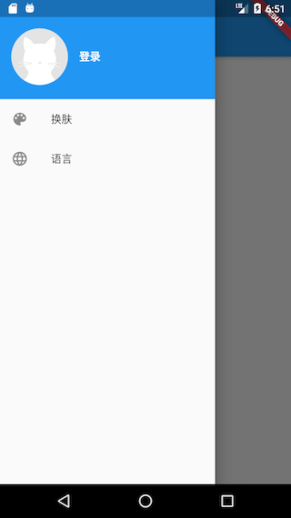

15.6 APP入口及主页
本节来介绍一下APP入口及首页。
15.6.1 APP入口
main函数为APP入口函数，实现如下：
void main() => Global.init().then((e) => runApp(MyApp()));
初始化完成后才会加载UI(MyApp)，MyApp 是应用的入口Widget，实现如下：
class MyApp extends StatelessWidget {
@override
Widget build(BuildContext context) {
return MultiProvider(
providers: [
ChangeNotifierProvider(create: (_) => ThemeModel()),
ChangeNotifierProvider(create: (_) => UserModel()),
ChangeNotifierProvider(create: (_) => LocaleModel()),
],
child: Consumer2<ThemeModel, LocaleModel>(
builder: (BuildContext context, themeModel, localeModel, child) {
return MaterialApp(
theme: ThemeData(
primarySwatch: themeModel.theme,
),
onGenerateTitle: (context){
return GmLocalizations.of(context).title;
},
home: HomeRoute(),
locale: localeModel.getLocale(),
//我们只支持美国英语和中文简体
supportedLocales: [
const Locale('en', 'US'), // 美国英语
const Locale('zh', 'CN'), // 中文简体
//其他Locales
],
localizationsDelegates: [
// 本地化的代理类
GlobalMaterialLocalizations.delegate,
GlobalWidgetsLocalizations.delegate,
GmLocalizationsDelegate()
],
localeResolutionCallback: (_locale, supportedLocales) {
if (localeModel.getLocale() != null) {
//如果已经选定语言，则不跟随系统
return localeModel.getLocale();
} else {
//跟随系统
Locale locale;
if (supportedLocales.contains(_locale)) {
locale= _locale!;
} else {
//如果系统语言不是中文简体或美国英语，则默认使用美国英语
locale= Locale('en', 'US');
}
return locale;
}
},
// 注册路由表
routes: <String, WidgetBuilder>{
"login": (context) => LoginRoute(),
"themes": (context) => ThemeChangeRoute(),
"language": (context) => LanguageRoute(),
},
);
},
),
);
}
}
在上面的代码中：
- 我们的根widget是
MultiProvider，它将主题、用户、语言三种状态绑定到了应用的根上，如此一来，任何路由中都可以通过Provider.of()来获取这些状态，也就是说这三种状态是全局共享的！ HomeRoute是应用的主页。- 在构建
MaterialApp时，我们配置了APP支持的语言列表，以及监听了系统语言改变事件；另外MaterialApp消费（依赖）了ThemeModel和LocaleModel，所以当APP主题或语言改变时MaterialApp会重新构建 - 我们注册了命名路由表，以便在APP中可以直接通过路由名跳转。
- 为了支持多语言（本APP中我们支持美国英语和中文简体两种语言）我们实现了一个
GmLocalizationsDelegate，子Widget中都可以通过GmLocalizations来动态获取APP当前语言对应的文案。关于GmLocalizationsDelegate和GmLocalizations的实现方式读者可以参考“国际化”一章中的介绍，此处不再赘述。
15.6.2 主页
为了简单起见，当APP启动后，如果之前已登录了APP，则显示该用户项目列表；如果之前未登录，则显示一个登录按钮，点击后跳转到登录页。另外，我们实现一个抽屉菜单，里面包含当前用户头像及APP的菜单。下面我们先看看要实现的效果，如图15-1、15-2所示：

我们在“lib/routes”下创建一个“home_page.dart”文件，实现如下：
class HomeRoute extends StatefulWidget {
@override
_HomeRouteState createState() => _HomeRouteState();
}
class _HomeRouteState extends State<HomeRoute> {
static const loadingTag = "##loading##"; //表尾标记
var _items = <Repo>[Repo()..name = loadingTag];
bool hasMore = true; //是否还有数据
int page = 1; //当前请求的是第几页
@override
Widget build(BuildContext context) {
return Scaffold(
appBar: AppBar(
title: Text(GmLocalizations.of(context).home),
),
body: _buildBody(), // 构建主页面
drawer: MyDrawer(), //抽屉菜单
);
}
...// 省略
}
上面代码中，主页的标题（title）我们是通过GmLocalizations.of(context).home来获得，GmLocalizations是我们提供的一个Localizations类，用于支持多语言，因此当APP语言改变时，凡是使用GmLocalizations动态获取的文案都会是相应语言的文案，这在前面“国际化”一章中已经介绍过，读者可以前翻查阅。
我们通过 _buildBody()方法来构建主页内容，_buildBody()方法实现代码如下：
Widget _buildBody() {
UserModel userModel = Provider.of<UserModel>(context);
if (!userModel.isLogin) {
//用户未登录，显示登录按钮
return Center(
child: ElevatedButton(
child: Text(GmLocalizations.of(context).login),
onPressed: () => Navigator.of(context).pushNamed("login"),
),
);
} else {
//已登录，则显示项目列表
return ListView.separated(
itemCount: _items.length,
itemBuilder: (context, index) {
//如果到了表尾
if (_items[index].name == loadingTag) {
//不足100条，继续获取数据
if (hasMore) {
//获取数据
_retrieveData();
//加载时显示loading
return Container(
padding: const EdgeInsets.all(16.0),
alignment: Alignment.center,
child: SizedBox(
width: 24.0,
height: 24.0,
child: CircularProgressIndicator(strokeWidth: 2.0),
),
);
} else {
//已经加载了100条数据，不再获取数据。
return Container(
alignment: Alignment.center,
padding: EdgeInsets.all(16.0),
child: Text(
"没有更多了",
style: TextStyle(color: Colors.grey),
),
);
}
}
//显示单词列表项
return RepoItem(_items[index]);
},
separatorBuilder: (context, index) => Divider(height: .0),
);
}
}
上面代码注释很清楚：如果用户未登录，显示登录按钮；如果用户已登录，则展示项目列表。
_retrieveData() 方法用于获取项目列表，具体逻辑是：每次请求获取20条，当获取成功时，先判断是否还有数据（根据本次请求的项目条数是否等于期望的20条来判断还有没有更多的数据），然后将新获取的数据添加到_items中，然后更新状态，具体代码如下：
//请求数据
void _retrieveData() async {
var data = await Git(context).getRepos(
queryParameters: {
'page': page,
'page_size': 20,
},
);
//如果返回的数据小于指定的条数，则表示没有更多数据，反之则否
hasMore = data.length > 0 && data.length % 20 == 0;
//把请求到的新数据添加到items中
setState(() {
_items.insertAll(_items.length - 1, data);
page++;
});
}
在此需要注意，Git(context).getRepos(…)方法中需要refresh参数来判断是否使用缓存。
itemBuilder为列表项的构建器（builder），我们需要在该回调中构建每一个列表项Widget。由于列表项构建逻辑较复杂，我们单独封装一个RepoItem Widget 专门用于构建列表项UI。RepoItem 实现如下：
import '../index.dart';
class RepoItem extends StatefulWidget {
// 将`repo.id`作为RepoItem的默认key
RepoItem(this.repo) : super(key: ValueKey(repo.id));
final Repo repo;
@override
_RepoItemState createState() => _RepoItemState();
}
class _RepoItemState extends State<RepoItem> {
@override
Widget build(BuildContext context) {
var subtitle;
return Padding(
padding: const EdgeInsets.only(top: 8.0),
child: Material(
color: Colors.white,
shape: BorderDirectional(
bottom: BorderSide(
color: Theme.of(context).dividerColor,
width: .5,
),
),
child: Padding(
padding: const EdgeInsets.only(top: 0.0, bottom: 16),
child: Column(
crossAxisAlignment: CrossAxisAlignment.start,
children: <Widget>[
ListTile(
dense: true,
leading: gmAvatar(
//项目owner头像
widget.repo.owner.avatar_url,
width: 24.0,
borderRadius: BorderRadius.circular(12),
),
title: Text(
widget.repo.owner.login,
textScaleFactor: .9,
),
subtitle: subtitle,
trailing: Text(widget.repo.language??'--'),
),
// 构建项目标题和简介
Padding(
padding: const EdgeInsets.symmetric(horizontal: 16.0),
child: Column(
crossAxisAlignment: CrossAxisAlignment.start,
children: <Widget>[
Text(
widget.repo.fork
? widget.repo.full_name
: widget.repo.name,
style: TextStyle(
fontSize: 15,
fontWeight: FontWeight.bold,
fontStyle: widget.repo.fork
? FontStyle.italic
: FontStyle.normal,
),
),
Padding(
padding: const EdgeInsets.only(top: 8, bottom: 12),
child: widget.repo.description == null
? Text(
GmLocalizations.of(context).noDescription,
style: TextStyle(
fontStyle: FontStyle.italic,
color: Colors.grey[700]),
)
: Text(
widget.repo.description!,
maxLines: 3,
style: TextStyle(
height: 1.15,
color: Colors.blueGrey[700],
fontSize: 13,
),
),
),
],
),
),
// 构建卡片底部信息
_buildBottom()
],
),
),
),
);
}
// 构建卡片底部信息
Widget _buildBottom() {
const paddingWidth = 10;
return IconTheme(
data: IconThemeData(
color: Colors.grey,
size: 15,
),
child: DefaultTextStyle(
style: TextStyle(color: Colors.grey, fontSize: 12),
child: Padding(
padding: const EdgeInsets.symmetric(horizontal: 16),
child: Builder(builder: (context) {
var children = <Widget>[
Icon(Icons.star),
Text(" " +
widget.repo.stargazers_count
.toString()
.padRight(paddingWidth)),
Icon(Icons.info_outline),
Text(" " +
widget.repo.open_issues_count
.toString()
.padRight(paddingWidth)),
Icon(MyIcons.fork), //我们的自定义图标
Text(widget.repo.forks_count.toString().padRight(paddingWidth)),
];
if (widget.repo.fork) {
children.add(Text("Forked".padRight(paddingWidth)));
}
if (widget.repo.private == true) {
children.addAll(<Widget>[
Icon(Icons.lock),
Text(" private".padRight(paddingWidth))
]);
}
return Row(children: children);
}),
),
),
);
}
}
上面代码有两点需要注意：
-
在构建项目拥有者头像时调用了
gmAvatar(…)方法，该方法是是一个全局工具函数，专门用于获取头像图片，实现如下：Widget gmAvatar(String url, { double width = 30, double? height, BoxFit? fit, BorderRadius? borderRadius, }) { var placeholder = Image.asset( "imgs/avatar-default.png", //头像占位图 width: width, height: height ); return ClipRRect( borderRadius: borderRadius ?? BorderRadius.circular(2), child: CachedNetworkImage( imageUrl: url, width: width, height: height, fit: fit, placeholder: (context, url) =>placeholder, errorWidget: (context, url, error) =>placeholder, ), ); }代码中调用了
CachedNetworkImage是cached_network_image包中提供的一个Widget，它不仅可以在图片加载过程中指定一个占位图，而且还可以对网络请求的图片进行缓存，更多详情读者可以自行查阅其文档。 -
由于Flutter 的Material 图标库中没有fork图标，所以我们在iconfont.cn上找了一个fork图标，然后根据“3.3 图片及Icon”一节中介绍的使用自定义字体图标的方法集成到了我们的项目中。
15.6.3 抽屉菜单
抽屉菜单分为两部分：顶部头像和底部功能菜单项。当用户未登录，则抽屉菜单顶部会显示一个默认的灰色占位图，若用户已登录，则会显示用户的头像。抽屉菜单底部有“换肤”和“语言”两个固定菜单，若用户已登录，则会多一个“注销”菜单。用户点击“换肤”和“语言”两个菜单项，会进入相应的设置页面。我们的抽屉菜单效果如图15-3、15-4所示：

实现代码如下：
class MyDrawer extends StatelessWidget {
const MyDrawer({
Key? key,
}) : super(key: key);
@override
Widget build(BuildContext context) {
return Drawer(
child: MediaQuery.removePadding(
context: context,
// 移除顶部 padding.
removeTop: true,
child: Column(
crossAxisAlignment: CrossAxisAlignment.start,
children: <Widget>[
_buildHeader(), //构建抽屉菜单头部
Expanded(child: _buildMenus()), //构建功能菜单
],
),
),
);
}
Widget _buildHeader() {
return Consumer<UserModel>(
builder: (BuildContext context, UserModel value, Widget? child) {
return GestureDetector(
child: Container(
color: Theme.of(context).primaryColor,
padding: EdgeInsets.only(top: 40, bottom: 20),
child: Row(
children: <Widget>[
Padding(
padding: const EdgeInsets.symmetric(horizontal: 16.0),
child: ClipOval(
// 如果已登录，则显示用户头像；若未登录，则显示默认头像
child: value.isLogin
? gmAvatar(value.user!.avatar_url, width: 80)
: Image.asset(
"imgs/avatar-default.png",
width: 80,
),
),
),
Text(
value.isLogin
? value.user!.login
: GmLocalizations.of(context).login,
style: TextStyle(
fontWeight: FontWeight.bold,
color: Colors.white,
),
)
],
),
),
onTap: () {
if (!value.isLogin) Navigator.of(context).pushNamed("login");
},
);
},
);
}
// 构建菜单项
Widget _buildMenus() {
return Consumer<UserModel>(
builder: (BuildContext context, UserModel userModel, Widget? child) {
var gm = GmLocalizations.of(context);
return ListView(
children: <Widget>[
ListTile(
leading: const Icon(Icons.color_lens),
title: Text(gm.theme),
onTap: () => Navigator.pushNamed(context, "themes"),
),
ListTile(
leading: const Icon(Icons.language),
title: Text(gm.language),
onTap: () => Navigator.pushNamed(context, "language"),
),
if (userModel.isLogin)
ListTile(
leading: const Icon(Icons.power_settings_new),
title: Text(gm.logout),
onTap: () {
showDialog(
context: context,
builder: (ctx) {
//退出账号前先弹二次确认窗
return AlertDialog(
content: Text(gm.logoutTip),
actions: <Widget>[
TextButton(
child: Text(gm.cancel),
onPressed: () => Navigator.pop(context),
),
TextButton(
child: Text(gm.yes),
onPressed: () {
//该赋值语句会触发MaterialApp rebuild
userModel.user = null;
Navigator.pop(context);
},
),
],
);
},
);
},
),
],
);
},
);
}
}
用户点击“注销”，userModel.user 会被置空，此时所有依赖userModel的组件都会被rebuild，如主页会恢复成未登录的状态。
本小节我们介绍了APP入口MaterialApp的一些配置，然后实现了APP的首页。后面我们将展示登录页、换肤页、语言切换页。